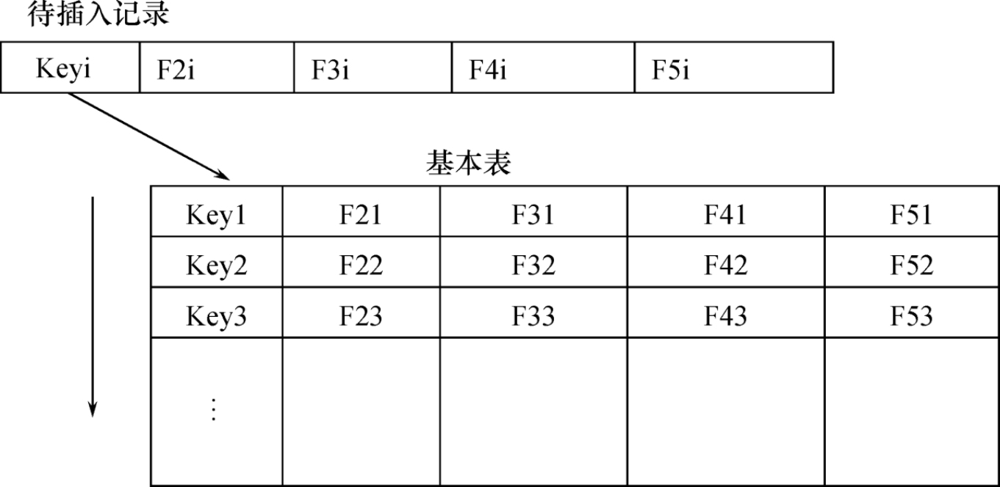
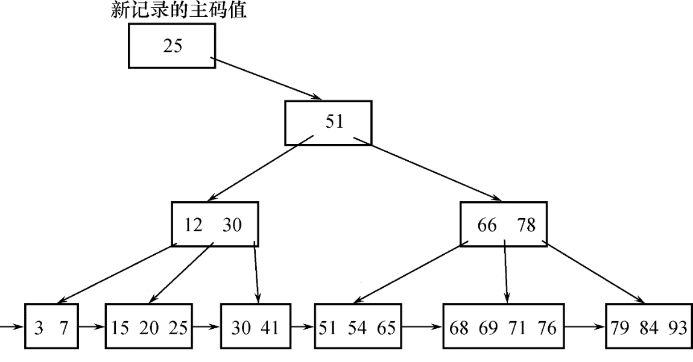
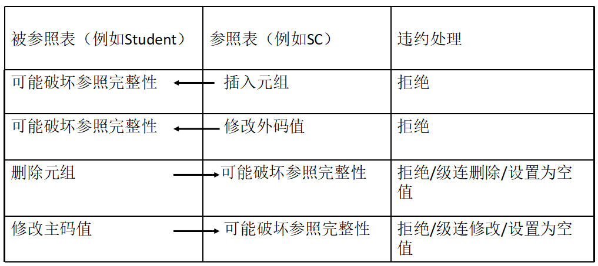

数据库第5章：数据库完整性
1 基本概念
数据的完整性和安全性是两个不同概念。
数据的完整性：
- 防止数据库中存在不符合语义的数据，也就是防止数据库中存在不正确的数据
- 防范对象：不合语义的、不正确的数据
数据的安全性
- 保护数据库防止恶意的破坏和非法的存取
- 防范对象：非法用户和非法操作
为维护数据库的完整性，DBMS必须：
- 提供定义完整性约束条件的机制
- 提供完整性检查的方法
- 违约处理
实体完整性和参照完整性：
- 关系模型必须满足的完整性约束条件
- 称为关系的两个不变性，应该由关系系统自动支持
用户定义的完整性：
- 应用领域需要遵循的约束条件，体现了具体领域中的语义约束
实体完整性规则的说明：
-
实体完整性规则是针对基本关系而言的。一个基本表通常对应现实世界的一个实体集。
-
现实世界中的实体是可区分的，即它们具有某种唯一性标识。
-
关系模型中以候选码作为唯一性标识。
-
候选码中的属性即主属性不能取空值。
主属性取空值，就说明存在某个不可标识的实体，即存在不可区分的实体，这与第2点相矛盾，因此这个规则称为实体完整性。
2 实体完整性
2.1 候选码、主码、主属性
- 关系中的某一属性组的值能唯一地标识一个元组，则称该属性组为候选码；
- 从候选码中选定一个作为主码；
- 候选码的诸属性称为主属性；
- 不包含在候选码中的属性称为非主属性；
2.2 外码（Foreign Key）
设F是基本关系R的一个或一组属性，但不是关系R的码。如果F与基本关系S的主码Ks相对应，则称F是基本关系R的外码。
基本关系R称为参照关系（Referencing Relation）。
基本关系S称为被参照关系（Referenced Relation）或目标关系（Target Relation）。
2.3 实体完整性定义
单属性构成的码有两种说明方法
- 定义为列级约束条件
1 | CREATE TABLE Student |
- 定义为表级约束条件
1 | CREATE TABLE Student |
对多个属性构成的码只有一种说明方法
- 定义为表级约束条件
1 | CREATE TABLE SC |
2.4 实体完整性检查和违约处理
插入或对主码列进行更新操作时，RDBMS按照实体完整性规则自动进行检查。包括：
-
检查主码值是否唯一，如果不唯一则拒绝插入或修改
检查记录中主码值是否唯一的一种方法是进行全表扫描


检查主码的各个属性是否为空，只要有一个为空就拒绝插入或修改。
3 参照完整性
3.1 参照完整性定义
- 在
CREATE TABLE中用FOREIGN KEY短语定义哪些列为外码 - 用
REFERENCES短语指明这些外码参照哪些表的主码
例如，关系SC中一个元组表示一个学生选修的某门课程的成绩，（Sno，Cno）是主码。Sno，Cno分别参照引用Student表的主码和Course表的主码
1 | CREATE TABLE SC |
3.2 参照完整性检查和违约处理
可能破坏参照完整性的情况及违约处理：

-
拒绝（NO ACTION）执行，默认策略，不允许该操作执行。
-
级联（CASCADE）操作
当删除或修改被参照表的一个元组导致与参照表的不一致时，删除或修改参照表中所有导致不一致的元组。 -
设置为空值（SET-NULL）
当删除或修改被参照表的一个元组导致与参照表的不一致时，则将参照表中的所有造成不一致的元组的对应树形设置为空值。
对于参照完整性，除了应该定义外码，还应定义外码列是否允许空值
显式说明参照完整性的违约处理示例：
1 | CREATE TABLE SC |
4 用户定义的完整性
用户定义的完整性就是针对某一具体应用的数据必须满足的语义要求，RDBMS提供，而不必由应用程序承担。
4.1 属性上的约束条件
CREATE TABLE定义属性的同时，可以根据应用要求定义属性上的约束条件，即属性值限制，包括：
- 列值非空（NOT NULL）
在定义SC表时，说明Sno、Cno、Grade属性不允许取空值。
1 | CREATE TABLE SC |
- 列值唯一（UNIQUE）
建立部门表DEPT，要求部门名称Dname列取值唯一，部门编号Deptno列为主码。
1 | CREATE TABLE DEPT |
- 检查列值是否满足一个布尔表达式（CHECK）
Student表的Ssex只允许取“男”或“女”。
1 | CREATE TABLE Student |
插入元组或修改属性的值时，RDBMS检查属性上的约束条件是否被满足，如果不满足则操作被拒绝执行。
4.2 元组上的约束条件的定义
在CREATE TABLE时可以用CHECK短语定义元组上的约束条件，即元组级的限制。
同属性值限制相比，元组级的限制可以设置不同属性之间的取值的相互约束条件。
当学生的性别是男时，其名字不能以Ms.打头。
1 | CREATE TABLE Student |
插入元组或修改属性的值时，RDBMS检查元组上的约束条件是否被满足，如果不满足则操作被拒绝执行。
5 完整性约束命名子句
完整性约束可以被命名以方便管理，从而可以灵活地增加、删除一个完整性约束条件。
5.1 完整性约束命名子句
CONSTRAINT 约束：
1 | CONSTRAINT <完整性约束条件名> |
建立学生登记表Student，要求学号在90000~99999之间，姓名不能取空值，年龄小于30，性别只能是“男”或“女”。
1 | CREATE TABLE Student |
- Student表上建立了5个约束条件，包括主码约束（命名为StudentKey）以及C1、C2、C3、C4四个列级约束。
建立教师表TEACHER，要求每个教师的工资不低于3000元。应发工资是工资列Sal与扣除项Deduct之和。
1 | CREATE TABLE TEACHER |
5.2 修改表中的完整性限制
可以使用ALTER TABLE语句修改表中的完整性限制。
去掉Student表中对性别的限制。
1 | ALTER TABLE Student DROP CONSTRAINT C4； |
修改表Student中的约束条件，要求学号改为在900000~999999之间，年龄由小于30改为小于40。
- 可以先删除原来的约束条件，再增加新的约束条件。
1 | ALTER TABLE Student DROP CONSTRAINT C1; |
6 域中的完整性限制
SQL支持域的概念，并可以用CREATE DOMAIN语句建立一个域以及该域应该满足的完整性约束条件。
数据库中不同的属性可以来自同一个域，当域上的完整性约束条件改变时只要修改域的定义即可，而不必一一修改域上的各个属性。
建立一个性别域，并声明性别域的取值范围
1 | CREATE DOMAIN GenderDomain CHAR(2) |
建立一个性别域GenderDomain，并对其中的限制命名
1 | CREATE DOMAIN GenderDomain CHAR(2) |
7 断言
SQL中可以用CREATE ASSERTION语句来指定一个更具一般性的约束条件。（多个表或聚集操作）
断言创建以后，任何对断言中所涉及关系的操作都会触发关系关系数据库管理系统对断言的检查，任何使断言不为真值的操作都会被拒绝执行。
- 语句格式：
1 | CREATE ASSERTION <断言名> <CHECK 子句> |
限制数据库课程最多60名学生选修
1 | CREATE ASSERTION ASSE_SC_DB_NUM |
限制每一门课程最多60名学生选修
1 | CREATE ASSERTION ASSE_SC_CNUM1 |
断言的利弊：
- 一方面能够保证数据库的一致性；
- 另一方面，检测和维护断言需要很大的开销，系统效率降的很低。一般不主张使用断言！
8 触发器
触发器（Trigger）是用户定义在关系表上的一类由事件驱动的特殊过程
- 由服务器自动激活
- 可以进行更为复杂的检查和操作，具有更精细和更强大的数据控制能力
8.1 定义触发器
- CREATE TRIGGER语法格式：
1 | CREATE TRIGGER <触发器名> |
定义触发器的语法说明：
- 创建者：表的拥有者
- 触发器名
- 表名：触发器的目标表
- 触发事件：INSERT、DELETE、UPDATE
- 触发器类型
- 行级触发器（FOR EACH ROW）
- 语句级触发器（FOR EACH STATEMENT）
例如，假设在TEACHER表上创建了一个AFTER UPDATE触发器。如果表TEACHER有1000行，执行如下语句：
1 | UPDATE TEACHER SET Deptno=5; |
- 如果该触发器为语句级触发器，那么执行完该语句后，触发动作只发生一次
- 如果是行级触发器，触发动作将执行1000次
行触发器和语句触发器的区别表现在：
- 行触发器要求当一个DML语句操作影响数据库中的多行数据时，对于其中的每个数据行，只要它们符合触发约束条件，均激活一次触发器；
- 语句触发器将整个语句操作作为触发事件，当它符合约束条件时，激活一次触发器。当省略FOR EACH ROW 选项时，BEFORE 和AFTER 触发器为语句触发器
触发条件：
- 触发条件为真才执行
- 省略WHEN触发条件则激活后肯定执行
触发动作体：
- 触发动作体可以是一个匿名PL/SQL过程块
- 也可以是对已创建存储过程的调用
当对表SC的Grade属性进行修改时，若分数增加了10%，则将此次操作记录到另一个表SC_UC(Sno, Cno, Oldgrade, Newgrade)中。
1 | CREATE TRIGGER SC_T |
将每次对表Student的插入操作所增加的学生个数记录到表StudentInsertLog中。
1 | CREATE TRIGGER Student_Count |
为教师表Teacher定义完整性规则“教授的工资不得低于4000元，如果低于4000元，自动改为4000元”。
1 | CREATE TRIGGER Insert_Or_Update_Sal |
8.2 激活触发器
触发器的执行，是由触发事件激活的，并由数据库服务器自动执行。
一个数据表上可能定义了多个触发器，同一个表上的多个触发器激活时遵循如下的执行顺序：
- 执行该表上的BEFORE触发器；
- 激活触发器的SQL语句；
- 执行该表上的AFTER触发器。
8.3 删除触发器
删除触发器的SQL语法：
1 | DROP TRIGGER <触发器名> ON <表名> |
触发器必须是一个已经创建的触发器，并且只能由具有相应权限的用户删除。
 微信
微信 支付宝
支付宝